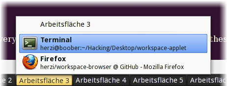

Browser Workspaces, Applications and Windows easily…
Workspace Browser will provide you with a very intuitive user interface to manage
Workspaces, Applications and Windows on your Desktop.

Dependencies
Install
We have prepared very easy ways of installing workspace-browser on these distrubutions:
- Fedora 12
- Install Package Repository (will provide you with updates for workspace-browser as well)
- Install the package called "workspace-browser"
If your distribution is not listed there, please check out one of these options:
-
Ask us for packages (as long as the OpenSuse Build Service supports your distribution,
this is easy for us).
-
Build the package on your own. This includes the classical three-step compilation:
-
Download the package
-
tar xzf workspace-browser-<version>.tar.gz
-
cd workspace-browser-<version> && ./configure
-
make
-
sudo make install
Known Issues
- I cannot see the applet in the list from GNOME Panel. What did I do wrong?
-
Usually, nothing. You should just check the prefix of your installation.
Default installations of GNOME don't support applets from the /usr/local
prefix by default.
You can easily enable the location by editing this file:
/etc/bonobo-activation/bonobo-activation-config.xml
License
LGPL 2.1+
Authors
Sven Herzberg
Download
Latest Relase
Download Workspace Browser 0.0.1
Unreleased Code
You can download this project in either
zip or
tar formats.
You can also clone the project with Git
by running:
$ git clone git://github.com/herzi/workspace-browser